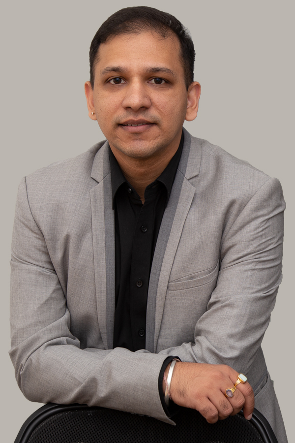
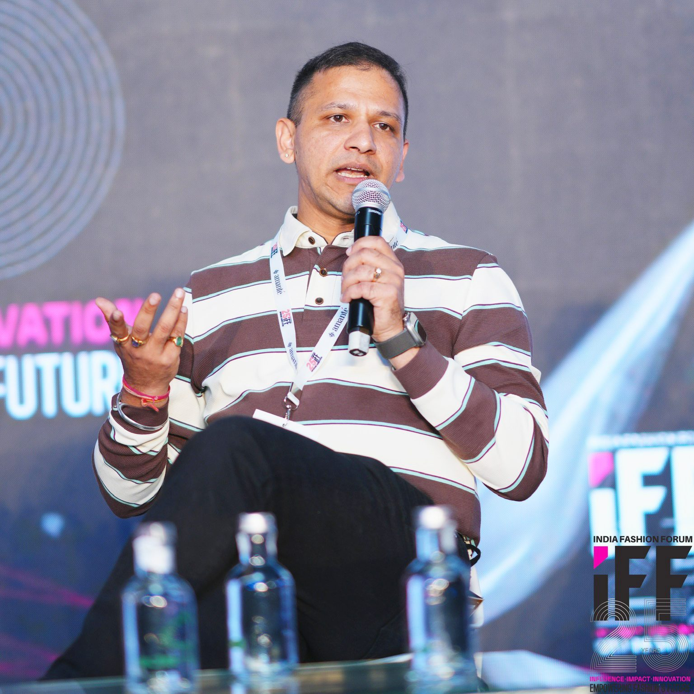
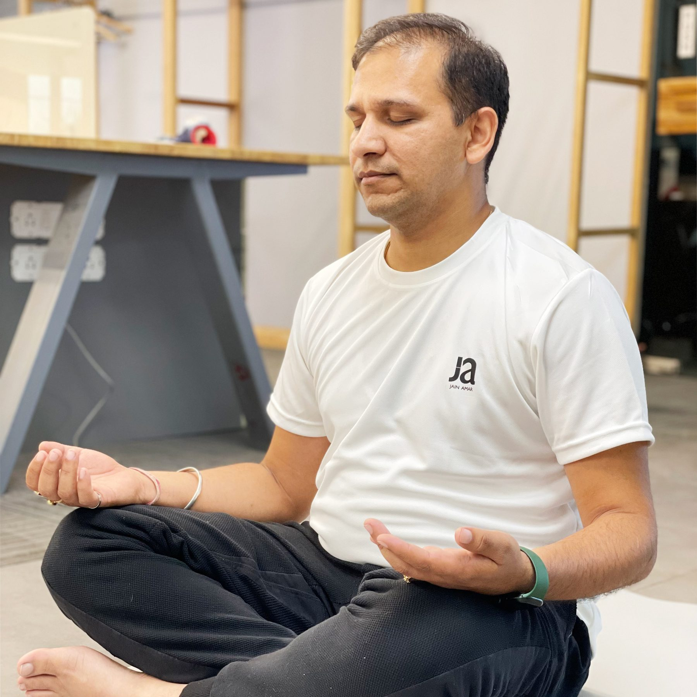
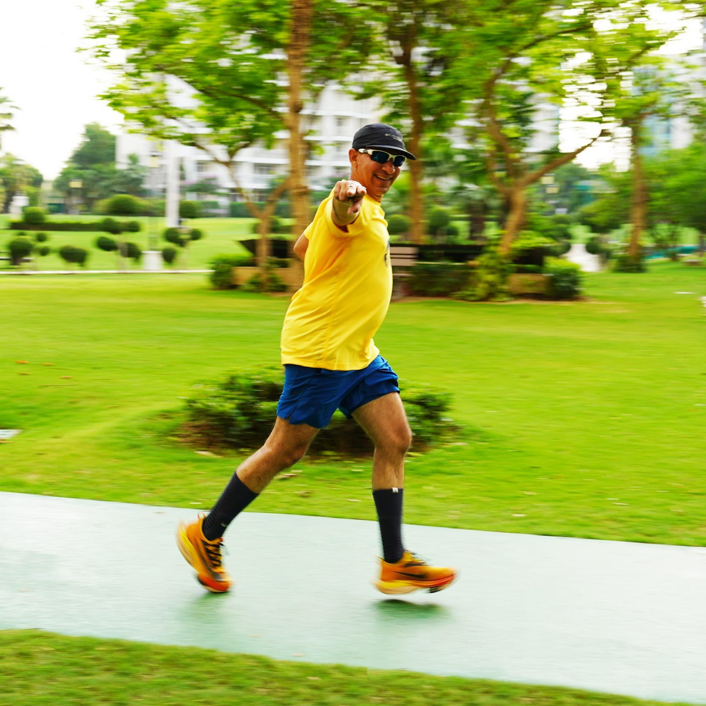
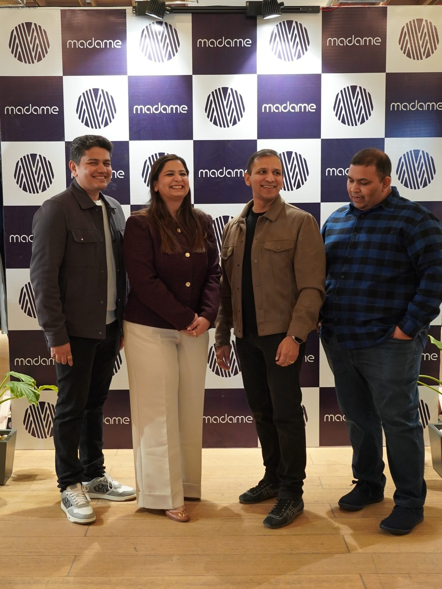
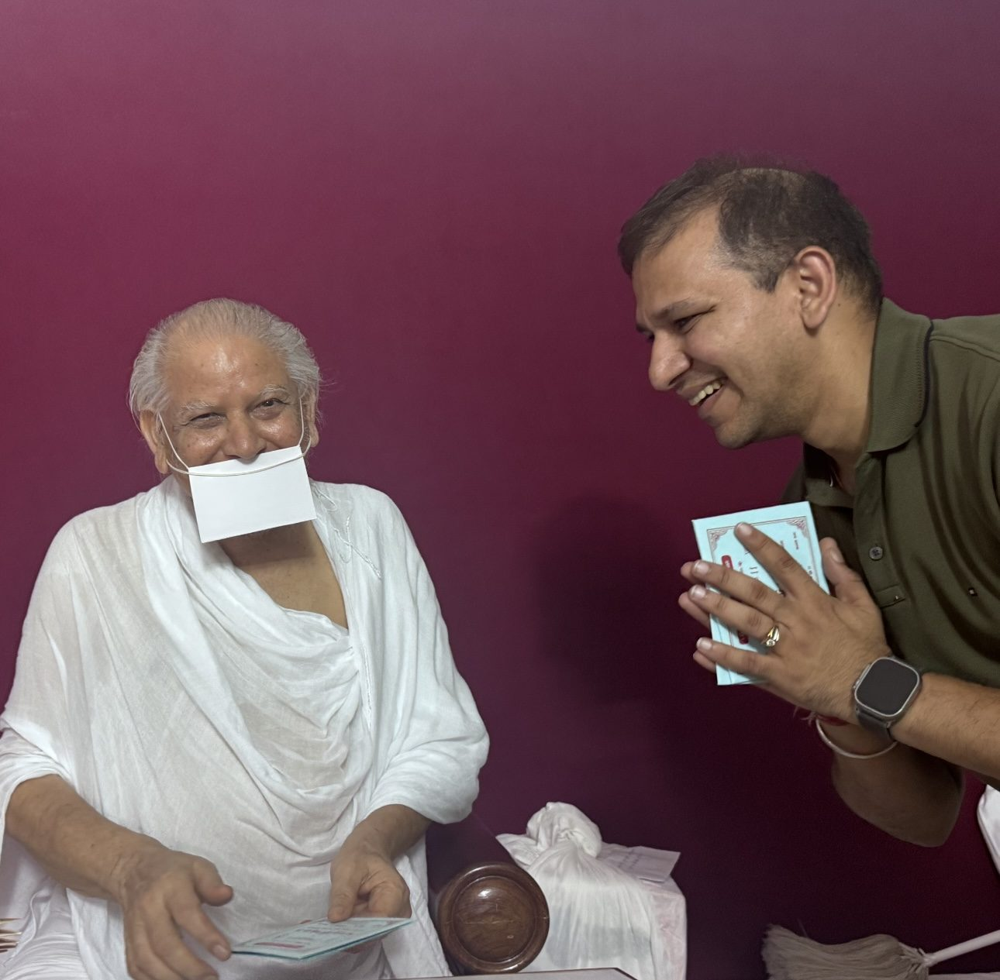

"To nurture people and build enduring institutions so that future generations inherit opportunities greater than those we received."

Gurugram, India
CEO · Board transitionTwo decades navigating a multi-generational apparel company from operator to steward
Growing people, systems and institutions with a long-horizon lens
Daily Samayik, Sudarshan Kriya, Vipassana — inner practice as leadership foundation
Ultra marathons, trail runs — training the mind to hold long distances
Akhil Jain has spent over two decades inside the real, unglamorous machinery of a family enterprise — navigating operations, governance tensions, and generational transitions in India's apparel industry. He led sales and marketing for Madame, a fashion brand with 150+ stores nationally and international presence, built a team from scratch, launched a Family Business Board and guided his family through a formal constitution process with Deloitte.
The work has not been smooth. He has written resignation letters he didn't send, started over after cash-flow crises, and learned — slowly — that the gap between vision and execution in a family business requires patience far more than strategy. That honesty is the core of what he brings to a room.
His Jain roots run deep. He attempted his first Samayik in 2004 on a Sunday morning after an overnight factory shift. The practice has continued since, alongside 15+ years of Art of Living, a 10-day Vipassana in Leh (2025), and an endurance running habit that began with a half marathon in 2018 and has extended to 50K trail events and the Athens Authentic Marathon (2024).
He is now deliberately transitioning from executive operator to board steward — building conditions for the next generation to lead with confidence.
Retreats, trails, family, forums — and the everyday practice of building something worth passing on.





Daily 48-minute practice of equanimity. First attempted in 2004 on a Sunday morning after an overnight factory shift. Formally committed since 2022, scaling from one to five daily sessions by age 60 in 2042. Each session is a laboratory for noticing how rarely we are truly still.
Breath-based practice from Art of Living, maintained since 2009 — Part 1 (three times across Ludhiana), AMP, DSN, Sahaj Samadhi, Chakra Kriya. Rishikesh and Bangalore ashrams. Done once or twice weekly; consistently renewed after each retreat.
10-day silent retreat at Dhamma Laddha, Leh — April 2025. 10.5 hours of daily practice in near-zero temperatures, taught by 82-year-old Acharya Sh. Pramod K. Bhave. The first three days replayed the CEO transition in the subconscious; by day nine, clarity arrived without effort.
First half marathon: 2018. First ultra: 50K trail, Mukteshwar 2022. Athens Authentic Marathon, 2024. Running without music leads to automatic introspection — the same insight a monk once shared about walking between destinations. The miles are a practice in themselves.
Akhil speaks from lived experience at the intersection of family enterprise governance, Jain spiritual practice, and purposeful leadership. He has spoken at IIM-A growth accelerator programmes, JITO Mahakumbh, Economic Times forums, and LPU. He does not lecture from a safe distance — he thinks with a room. Available for panels, leadership retreats, family business conclaves, and college forums — on a paid or gratitude basis.
A journal that has run continuously since age 17, tracking business, family, friendship, and the slow evolution of a worldview. This website is partly drawn from it.
Joins Jain Amar Clothing after studying at NIFT Delhi. Starts with no desk and no clear role. Launches MYG, the men's line — his first independent unit — and carves a path from scratch.
Completes his first 48-minute Jain Samayik on a Sunday morning after an overnight factory shift — a moment he had been circling all year. The practice, once started, does not stop.
Meets and marries Sumedha in January — a partnership he describes as his most reliable anchor. She later becomes the company's head of marketing and e-commerce.
15 years of continuous programmes: Part 1 (three times), AMP, DSN, Sahaj Samadhi, Yoga Level 1, Chakra Kriya. Sudarshan Kriya becomes a weekly practice that outlasts every disruption.
Moves family to Gurugram and builds a proper corporate office. The distance from Ludhiana creates friction — and eventually clarity about what kind of leader he wants to be.
First half marathon (Dec 2018) after a high cholesterol reading. Full marathon 2019. Ultra marathon debut — 50K trail, Mukteshwar 2022. Ranked 7th. The discipline of endurance sport reshapes his relationship with patience and process.
Initiates and leads a multi-year process with Deloitte to create a Family Business Board and formal family constitution for Jain Amar — covering decision rights, succession, and shared values across three generations.
Runs the Athens Authentic Marathon in November. Completes Simon Sinek's Find Your Why process — crystallising a purpose that had been taking shape across twenty-five years of journal writing.
10-day silent retreat at Dhamma Laddha, Leh in April. Formally elevated to CEO of Jain Amar Clothing. The deepening of inner practice alongside the assumption of highest executive responsibility is, for him, the point.
Deliberately building the transition from executive operator to board steward. The goal: create conditions for the next generation to lead — and to have something worth saying publicly about what that actually requires.
The most important governance question in a family enterprise is not "who decides?" but "who is this decision for?" The answer changes everything.
Day 10 of Vipassana. Emerged with fewer certainties and more clarity. Sometimes those are the same thing.
Samayik is not a ritual of stillness. It is a practice of noticing how rarely we are still — and slowly, over years, changing that ratio.
The difference between an owner and a steward: one asks "what can I take from this?" The other asks "what will I leave behind?"
Running teaches you something governance doesn't: you cannot fake endurance. You either put in the miles or you don't finish.
* Replace sample cards with your actual posts. Each card takes a platform label, text, and date.
Panel talk, keynote or interview. Replace with a YouTube embed or thumbnail.
Replace with real video once available.
Whether you're curating a panel, running a leadership programme, or want to exchange ideas — reach out. Akhil is open to conversations that matter, on a paid or gratitude basis.